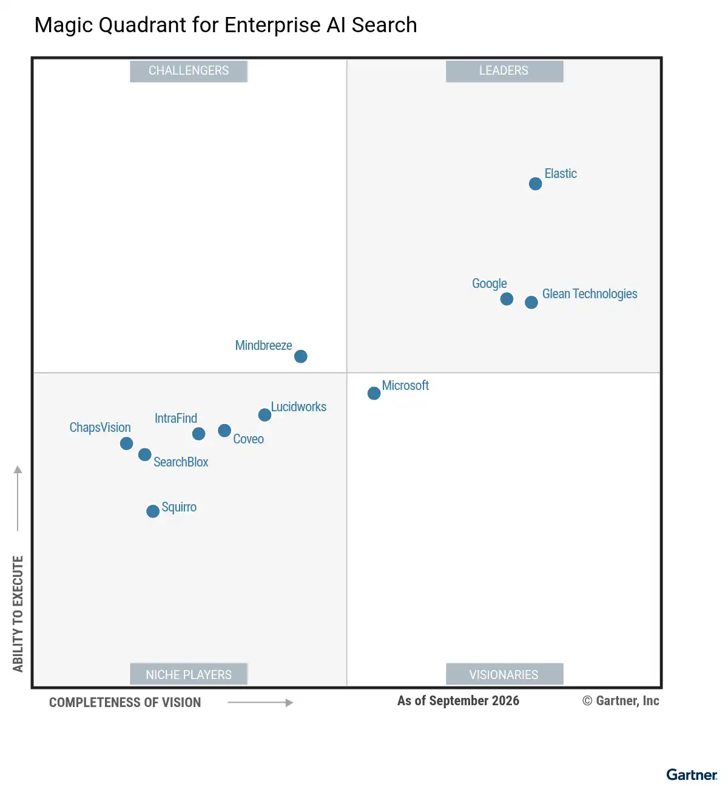

请访问原文链接：Magic Quadrant for Enterprise AI Search 2026 - 企业级 AI 搜索 查看最新版。原创作品，严禁商业及个人盈利性网站转载。
作者主页：sysin.org
Gartner 魔力象限：企业级 AI 搜索 2026
Gartner Magic Quadrant for Enterprise AI Search 2026
Published 5 October 2026

魔力象限
企业级 AI 搜索平台为 AI 智能体和 AI 助手提供一个基于组织内容和数据的上下文层。本研究旨在指导企业应用领域的领导者，了解哪些供应商和平台能够支持这些新型 AI 工作负载。
🤖 市场定义/描述
Gartner 将企业级 AI 搜索定义为一种软件平台，能够捕获并索引企业内部的信息，以便用于信息发现、洞察生成、决策制定和行动执行。这些平台是为满足企业级需求、基于检索增强生成（RAG）技术扩展 AI 助手和 AI 智能体的关键技术。它们采用广泛的先进自然语言处理（NLP）、机器学习（ML）和大语言模型（LLM）技术，并支持针对特定领域进行定制和调优。
企业级 AI 搜索平台（EAIS）连接多种数据源，以提取、丰富和索引信息，并检索与查询最相关的结果。其用户体验通常可以定制，并且越来越多地被用作构建 AI 助手的平台，以支持各种运营场景。
对于考虑采用基于 RAG 的解决方案的组织，应评估如何配置企业搜索平台，为 AI 助手和 AI 智能体提供所需的事实依据，而不是将大语言模型（LLM）、向量数据库和 NLP 流水线等独立组件集成到解决方案中。EAIS 并非智能体开发的首选平台，但部分供应商提供了与其集成的无代码智能体构建平台（NCAB）。
企业级 AI 搜索的应用场景包括：
- 数字化工作场所：用于企业内部网、数字化工作场所应用，以及面向员工的资源中心，例如终端用户 IT 服务和人力资源（HR）服务。
- 企业应用：将 AI 搜索集成到客户关系管理（CRM）、企业资源规划（ERP）或人力资本管理（HCM）等企业应用中，为财务、销售、客户服务、人力资源、供应链及其他业务领域提供集成式体验。
- 深度研究：面向研究人员的 AI 搜索体验，以广泛的内部和外部知识库为依据，用于综合多个信息来源中的洞察。
- AI 自动化：企业级 AI 搜索为 AI 智能体及其他智能应用提供上下文信息，以便协调和自动化工作。
- AI 增强：企业级 AI 搜索为企业 AI 助手提供必要的上下文信息 (s)，以增强员工的工作能力。
- 上下文工程：在推理时设计、管理和优化提供给生成式 AI（GenAI）模型的信息，以提高输出准确性、提升相关性、确保可靠性并优化成本。
企业级 AI 搜索可能与搜索功能嵌入其他平台的相邻市场形成竞争。这些市场包括网络搜索、搜索与产品发现、数字化工作场所应用套件、企业 AI 助手、嵌入企业应用的搜索和 AI 助手、企业内部网打包解决方案，以及文档管理平台。
✅ 必备功能
- 连接器：将搜索功能与结构化和非结构化数据源集成，包括文件系统、企业内部网、文档管理系统、电子邮件、数据库和业务应用。连接器通过推送或拉取模式获取内容及元数据，例如身份信息或权限数据。
- 处理流水线：根据所处理信息的格式和类型采用不同的处理方式，但通常包括规范化、分析、分类和安全处理。
- 规范化功能包括将内容转换为纯文本、语言规范化处理（例如词干提取）、词形还原、同义词扩展、语言翻译、音频和视频转录，以及从图像中提取文本。
- 安全处理可确保检索并解析信息的原始权限（例如访问控制列表），为后续索引做好准备。
- 搜索索引：存储经过处理和丰富的信息，并创建专门的数据结构，例如倒排索引和/或向量索引，以便在搜索过程中快速检索。
- 搜索引擎：负责处理用户查询的核心组件。搜索引擎流水线包括查询处理、查询执行、排序和安全过滤。
- 查询处理利用 NLP 和其他先进技术理解用户意图、处理不同的措辞表达并纠正错误。
- 查询执行与索引交互，并将潜在结果传递给相关性和排序组件。可以使用倒数排名融合（RRF）算法组合全文搜索和向量搜索结果，以提高相关性。
- 相关性排序会对搜索引擎识别出的结果进行排序，优先呈现最有用的信息。混合搜索结合关键词搜索和向量搜索，以提高准确性。还可以利用元数据、用户行为分析、业务规则 (s)，以及显式的提升或降权配置，进一步改善排序效果。
- 安全过滤确保用户只能访问其有权查看的内容。这种控制可以在索引过程中执行（例如提前绑定），将权限与索引数据一起存储；也可以在查询时执行（例如延迟绑定）。
- 用户界面：通常集成到现有企业应用中，也可以进行定制。其功能包括应用集成、个性化、定制、搜索栏、分面和筛选器、对话式界面、自动补全、建议、搜索结果摘要、投票和答案。个性化是指根据从用户及其交互触点收集的参数调整搜索结果。这些参数（例如使用历史、交互触点、用户所处的流程阶段、地理位置、设备和角色）用于对用户进行分类，并相应调整其使用体验。
- 语言支持：EAIS 平台能够根据不同语言采用不同的处理流水线。词形还原和词干提取的规则存在很大差异，不同工具支持的语言数量不同，对特定语言的支持深度也有所区别。
➕ 可选功能
- 治理：包括与身份提供商的集成（例如单点登录）、数据加密、审计，以及对行业标准的合规支持。
- 高级处理流水线（AI 增强）：利用 AI 技术，在初始处理阶段对来自数据源的信息进行分类和提取，从而丰富搜索索引。分析功能有助于理解内容结构、识别实体、解析安全绑定并分析情感。分类功能包括利用 ML 或 LLM 提取数据、敏感性标记、隐私标记、分面标签和本体映射。
- AI 助手：提供对话式体验，使用户能够使用自然语言提问、接收自然语言回答并提出后续问题。借助 RAG，搜索引擎首先根据用户查询从索引中检索相关文档或文本片段，然后将检索到的上下文传递给 LLM，由其生成回答。
- AI 智能体集成：提供模型上下文协议（MCP）和智能体间通信等智能体接口，使 AI 智能体和助手能够将企业级 AI 搜索平台用作上下文信息来源。
- 知识图谱：通过三元组和属性，明确映射实体及其关系，从而以结构化方式表示组织信息。知识图谱能够捕获领域知识、分类体系和本体，通常基于摄取和处理后的内容构建。通过建立相互关联的网络，知识图谱能够增强系统的上下文理解能力、揭示洞察，并通过实现语义理解和展示主题及专家之间的关系来改进信息检索。知识图谱还可以增强 AI 系统的能力，包括作为 RAG 的信息来源。
- 联邦搜索：允许搜索引擎动态地将查询分发到已连接的数据源和搜索引擎，并将汇总结果与传统搜索索引的结果一并呈现。
- 应用集成：将搜索功能嵌入企业应用，以降低终端用户的使用障碍并提供上下文信息。部分供应商提供与 Salesforce 和 Microsoft 365 等系统的开箱即用集成；其他供应商则提供 API 级开发服务和 UI 框架，可根据需要定制并集成到终端用户工具中。
- 部署：部署方式受到数据主权、扩展能力、场外托管、数据源位置和应用集成等因素的影响。常见部署选项包括 SaaS、由供应商托管服务的平台，以及由客户自行管理的平台。部分组件（例如 LLM）可以单独集成和托管。
- 管理：帮助高级用户和管理员配置系统，包括连接器、日志记录、处理流水线和用户体验。该功能通过热门查询、点击率、内容缺口（例如无结果查询）等分析，以及性能监控指标（例如每秒查询数、延迟）来评估系统性能。它还包括搜索引擎管理，例如调整相关性排序、同义词/反义词列表和元数据增强配置。

领导者（Leaders）：
- Elastic
- Glean Technologies
挑战者（Challengers）：见图
有远见者（Visionaries）：见图
特定领域者（Niche Players）：见图
查看完整报告（限期公开）：https://pan.baidu.com/s/1ntnZZunl0q8b0j8QCTQmqQ?pwd=jy7k
如何选择
主要技术市场上有哪些竞争参与者？他们如何为您提供长期帮助？Gartner 魔力象限是对特定市场的巅峰研究，可帮您广泛了解市场竞争对手的相对位置 (sysin)。利用图示法和一系列统一的评估标准，魔力象限可帮助您快速确定技术提供商执行其既定愿景的情况，并参照 Gartner 的市场观点了解其表现。
如何使用 Gartner 魔力象限？
面对特定投资机会考虑技术提供商时，请借助 Gartner 魔力象限迈出第一步。
请记住，专注于领导者象限不一定是最好的行动方案。有充分的理由考虑市场挑战者。特定领域者可能比市场领导者更能满足您的需求。这完全取决于提供商如何与您的业务目标保持一致。
Gartner 魔力象限如何发挥作用？
面对快速增长和提供商差异化明显的众多市场，Gartner 魔力象限用图形化方法划分出四类提供商：
- 领导者很好地执行了当前愿景 (sysin)，并为未来做好了充分准备
- 有远见者了解市场发展方向，或者有改变市场规则的设想，但执行效果不尽如人意。
- 特定领域者成功专注于一个小的细分市场，或者目标不明确，创新和表现未能超越竞争对手。
- 挑战者当前表现很好，或者可能在大部分细分市场占据主导地位，但未表现出对市场方向的了解。
相关产品下载
下载试用领导者产品：
- Elastic
- Glean Technologies (N/A)
- Google (SaaS)

文章用于推荐和分享优秀的软件产品及其相关技术，所有软件提供免费版或试用版。内容若侵犯了您的版权，请联系作者删除。如果您喜欢这篇文章，或者觉得它对您有所帮助，亦或发现有不当之处；欢迎发表评论，也欢迎分享这个网站，或者赞赏一下，谢谢！提示：捐赠或赞赏属于自愿赠予行为，提交后即表示您对作者的支持与认可。为避免误操作，请在确认前仔细检查金额，支付完成后将无法撤销或退还。
 支付宝赞赏
支付宝赞赏  微信赞赏
微信赞赏赞赏一下
敬请注册！点击 “登录” - “用户注册”（已知不支持 21.cn/189.cn 邮箱）。 请勿使用联合登录（已关闭）。